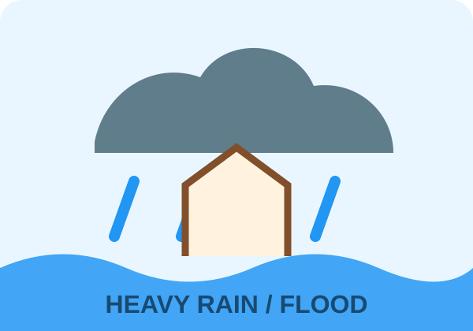
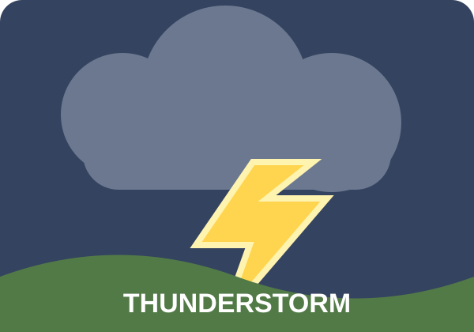
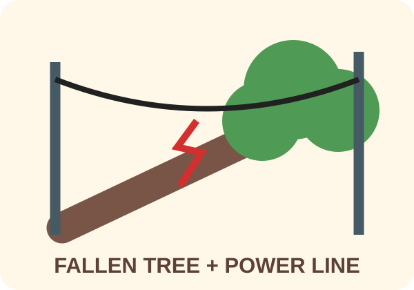

NGSS 3-ESS3-1: Make a claim about the merit of a design solution that reduces the impacts of a weather-related hazard.
Learning Objective
Students will match six visible impacts to weather hazards, compare solution cards, and defend which solution best reduces a chosen impact.
The Science
Hazard → impact → solution: A hazard is dangerous weather. An impact is the harm it causes. A solution is a structure, tool, or plan designed to reduce that harm.
Match the evidence. Floodwater can enter homes. Strong wind can damage roofs, trees, and power lines.
Choose a specific solution. Sandbags can slow shallow floodwater, while warnings give people time to prepare.
Compare merit. A strong claim says how well each solution fits the exact impact, not only which card a student likes.
Image-Led Hazard Matching Game
Teacher directions: Cut apart the cards. Place all hazard cards face up. Give the student one impact card at a time. Ask: “Which weather hazard could cause this?” The student places the impact beside a hazard and explains one visible clue. Then the student adds a solution card that could reduce that specific harm. More than one match can be reasonable when the evidence is explained.
Hazard Cards

Flooding rain
Water rises around roads and homes.
Tornado / strong wind
Fast-moving air can tear and topple objects.
Snowstorm
Snow and ice can stop travel.
Heat wave
Long periods of heat can make bodies overheat.
Severe windstorm
Wind can bring down trees and power lines.

Thunderstorm
Electrical charges can produce lightning.
Exactly Six Printable Impact Cards
Match every impact to a hazard. Write the hazard name on the line.
1. Flooded home
Water enters or surrounds a home.
Hazard: __________________
2. Wind / roof damage
Shingles or roof pieces are torn away.
Hazard: __________________
3. Snow-blocked road
Vehicles cannot travel safely.
Hazard: __________________
4. Heat safety
People need cooling, water, and shade.
Hazard: __________________

5. Fallen tree / power line
The road is blocked and the wire may be dangerous.
Hazard: __________________
6. Lightning danger
People outdoors could be struck.
Hazard: __________________
Printable Solution Cards
Choose a solution that reduces the specific impact. Explain how it helps.
Sandbag barrier
Slows shallow floodwater before it reaches a building.
Early warning alerts
Give people time to prepare, shelter, or leave.
Sturdy indoor shelter
Keeps people away from lightning, wind, and falling objects.
Evacuation plan
Moves people away before severe flooding or wind arrives.
Materials
Printed hazard, impact, and solution cards
Scissors, pencil, and worksheet
Investigation
Step 1 — Match hazard and impact (10 min). Place the six impact cards beside the hazard cards. For each match, the student names one visible clue and says what could be harmed.
Step 2 — Add solutions (8 min). Place at least one solution beside each matched pair. Ask the student to explain exactly how the solution reduces that impact.
Step 3 — Compare two solutions (10 min). Choose one impact. Compare two possible solutions for fit, amount of harm reduced, and limits.
Step 4 — Make a claim (10 min). Complete the worksheet claim with the hazard, impact, preferred solution, and evidence.
Step 5 — Apply locally (7 min). Name one hazard that happens locally and choose a matching solution. Do not ask students to act out dangerous conditions.
I choose __________________ because ________________________________________.
Parent/Teacher Notes
Safety: A downed power line must always be treated as energized. Stay far away and tell an adult to contact emergency or utility services. During lightning, move to a substantial building or hard-topped vehicle; do not shelter under a tree.
Solutions: Sandbags can reduce some floodwater impacts. Alerts can support preparation for all six hazards. Sturdy shelter best addresses wind and lightning danger. Evacuation can reduce exposure before severe flooding or wind, when officials advise it.
Sample claim: “For lightning danger, sturdy indoor shelter has more merit than sandbags because a substantial building separates people from the outdoor strike danger.”
Preview
Unlock the full lesson through the Little Lab Coats store.